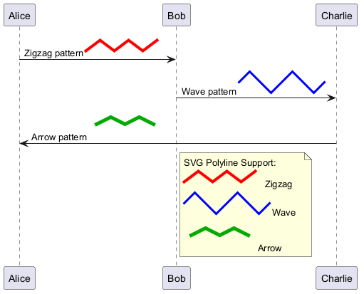

@startuml
!pragma svgparser sax
' Test polyline SVG sprite rendering
sprite zigzag <svg viewBox="0 0 110 30" xmlns="http://www.w3.org/2000/svg">
<polyline points="0,20 20,5 40,20 60,5 80,20 100,5"
stroke="#FF0000"
stroke-width="4"
fill="none"
stroke-linecap="round"
stroke-linejoin="round"/>
</svg>
sprite wave <svg viewBox="0 0 120 40" xmlns="http://www.w3.org/2000/svg">
<polyline points="0,20 15,5 30,20 45,35 60,20 75,5 90,20 105,35 120,20"
stroke="#0000FF"
stroke-width="3"
fill="none"/>
</svg>
sprite arrow <svg viewBox="0 0 100 50" xmlns="http://www.w3.org/2000/svg">
<polyline points="10,25 30,15 50,25 70,15 90,25"
stroke="#00AA00"
stroke-width="5"
fill="none"
stroke-linecap="square"/>
</svg>
Alice -> Bob : Zigzag pattern <$zigzag>
Bob -> Charlie : Wave pattern <$wave>
Charlie -> Alice : Arrow pattern <$arrow>
note right of Bob
SVG Polyline Support:
<$zigzag> Zigzag
<$wave> Wave
<$arrow> Arrow
end note
@enduml